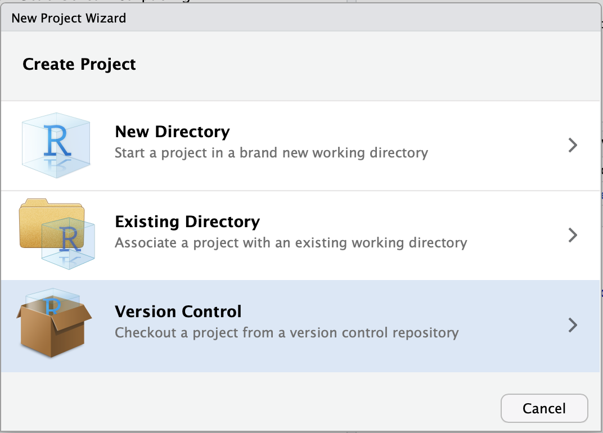

Appex 17 – Decision Trees
STA 363 - Spring 2023
Set up
Login to RStudio Pro
- Note: if you are off campus, you will need to use a VPN to connect
- Go to rstudio.deac.wfu.edu

Step 1: Create a New Project
Click File > New Project

Step 2: Click “Version Control”
Click the third option.

Step 3: Click Git
Click the first option

Step 4: Copy my starter files
Paste this link in the top box (Repository url):
https://github.com/sta-363-s23/appex-17.git

Part 1
Draw an example of a partition of a two-dimensional feature space that could result from recursive binary splitting with six regions. Label your figure with the regions, \(R_1, \dots, R_6\) as well as the cutpoints \(t_1, t_2, \dots\). Draw a decision tree corresponding to this partition.
Part 2
- How many internal nodes does this plot have? How many terminal nodes?
- What is the average Salary for players who have more than 6.5 years in the major leagues but less than 118 Hits? What % of the dataset fall in this category?
Part 3
Using the College data from the ISLR package, predict the number of applications received from a subset of the variables of your choice using a decision tree. (Not sure about the variables? Run ?College in the console after loading the ISLR package)